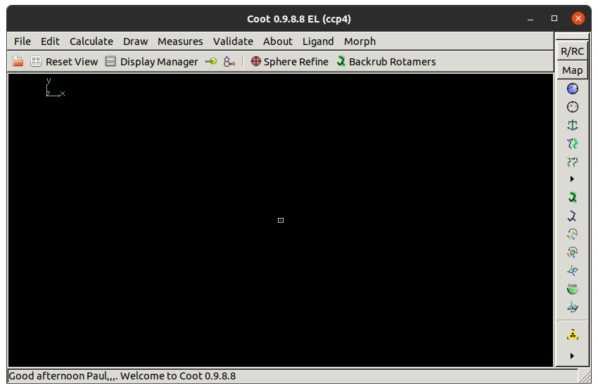

Coot Workshop
Protein Crystallography Summer School 2019
https://synergy.st-andrews.ac.uk/proteincrystallography
1st to 7th September 2019 (Programme)
University of York
1. Introduction
Coot is a program for macromolecular model building, model completion and validation (Emsley et al. 2010). This workshop will give step-by-step instructions on how to use Coot to complete a molecular replacement (MR) solution. The structure we are trying to build is 5EG2, a human SET7/9 mutant in complex with S-adenosyl-l-homocysteine (SAH) and a 10 residue transcription initiation factor (Fick et al. 2016). The data extend to 1.55 Å resolution and the A chain is small with only 262 residues.
As a homology model, we have chosen 1N6A. This is an older selenomethionine derivative of human SET7/9 solved at 1.7 Å resolution (Kwon et al. 2003). The model was processed using phaser.sculptor, which trims unaligned regions using a sequence alignment and truncates side chains that differ between the model and target. Pruning the MR model was not needed to find a solution in this case as it is so similar, but in general it is good practice. MR was done using phaser through the CCP4i2 Basic Molecular Replacement task. This was followed by csymmatch to move the MR solution to the same origin as the deposited structure and finally refinement using REFMAC. The following files produced by REFMAC are needed for the workshop:
- refined_model.mtz - reflection data in MTZ format
- refined_model.pdb - coordinates in PDB format
2. Starting
Type coot on the command line.
The Coot window should appear.
For this to work, the coot executable should be in your path.
If it is not then you need to source one of the CCP4 setup scripts:
source ccp4-7.0/bin/ccp4.setup-csh # if shell is csh/tcsh
source ccp4-7.0/bin/ccp4.setup-sh # if shell is bashThe Coot window should look something like this:
At the top of the screen is the menu bar with File, Edit, Calculate etc. Below this is the main toolbar with a button to open the Display Manager. Buttons on the main toolbar can be customised by right clicking on the empty space. On the right is the refinement toolbar with the most widely used model building tools. At the bottom of the window is the status bar, which is used to display messages.
Files that you want to open in Coot can also be passed as command line arguments:
coot refined_model.pdb refined_mode.mtzFile / Open Coordinates
(you can also click the folder icon in the main toolbar).
A file browser will appear.
From this you can select a coordinate file,
as well choose how to recentre the view and the new molecule.
Select refined_model.pdb and click Open.
A window will appear asking you to fix nomenclature errors.
This is a common occurence when opening coordinates and is usually because
there is an atom naming convention for symmetrical residues,
e.g. which way round CD1 and CD2 are in PHE, that most programs ignore.
Click Yes to fix them.
Now we will open the 2mFo-DFc and mFo-DFc maps.
Going to File / Auto Open MTZ
is equivalent to passing the MTZ on the command line
and will open both maps if it can work out which columns to use.
We will open the maps one at a time.
Choose File / Open MTZ, mmCIF, fcf or phs
to open the file browser.
Select refined_model.mtz and click Open.
The following window should appear:

This window allows you to select
which amplitude and phase columns to use for the new map.
Sensible defaults have been chosen for the 2mFo-DFc map.
In this case there is no need use weights
because the FWT,PHWT columns are already weighted.
If you click the Expert Mode? button
you can also choose resolution limits to truncate the data.
Click OK to open the 2mFo-DFc map.
Now we will open the mFo-DFc map.
Choose File / Open MTZ, mmCIF, fcf or phs again
and open refined_model.mtz.
Change the Amplitudes column to DELFWT
and the Phases column to PHDELWT.
The Is a Difference Map checkbox
needs to be checked (should happen automatically)
so that Coot will treat this as a difference map.
Click OK.
The maps should be visible as a sphere in the centre of the screen. By default, the 2mFo-DFc is coloured blue and the mFo-DFc (difference) map is coloured green for positive density and red for negative density.

3. Viewing
The following controls are used to change the view:
| Action | Result |
|---|---|
| Left-mouse drag | Rotate view |
| Ctrl left-mouse drag | Translate view |
| Right-mouse drag | Zoom |
| Ctrl right-mouse drag | Adjust clipping |
| Middle-mouse click | Centre on atom |
By default, the rotation is done
using a virtual trackball with a spherical surface.
It depends not only on the direction you are dragging
but also where in the view the mouse pointer is.
If this feels strange you can try changing it
by going to Edit / Preferences,
selecting General on the left
and choosing the HID tab.
The Flat option will change the rotation
so that only the direction of dragging matters.

Open Display Manager from the main toolbar.
This shows lists of all the molecules and maps currently open.
You can toggle whether individual molecules and maps are displayed.
The default representation for molecules is
Bonds (Colour by Atom),
which is a good representation for model building.
However, if we want to look at larger scale features of the model
the C-alphas/Backbone representation is useful.
For now, un-display both maps
and change the molecule representation to Jones' Rainbow.
This is a variation of the C-alpha representation
where the chain is coloured
from blue at the N-terminus to red at the C-terminus.
The dotted lines at the C-terminus
show us that there are missing residues there.

When checking if a molecular replacement solution is correct,
it is useful to see whether the packing of molecules
looks reasonable for a crystal.
To control the displaying of symmetry equivalents
go to Draw / Cell & Symmetry.
The following window should appear:
Turn the Master Switch to Symmetry On
then click the Symmetry by Molecule button
to open another window.
In the new window change the Display Options
for Molecule 0 (the only molecule)
to Display as CAs and click OK.
Increase the Symmetry Atom Display Radius
to 80 Å,
change Show Unit Cells? to Yes
and click OK.
The spacegroup is P 32 2 1.
If you rotate the view to look along the C axis of the cell
you can see the threefold rotation
and long triangular channels that run through the crystal.
Also, importantly, the molecule has close contacts with its neighbours
that are necessary for crystal formation.
Below, the image on the left shows our good MR solution
and the image on the right shows a bad MR solution
without proper crystal packing.

- Map display
- Map scrolling
- Go to atom
4. Fixing the protein
- Renumber residue range
- Touch on validation (density fit only)
- Deleting
- Mutating
- Rotamers
- Real space refinement
- Adding terminal residues
5. Adding solvent
- Adding solvent molecules
- Auto find waters
- Checking waters
- Manually add waters
6. Building a peptide
- Skeleton map
- CA Baton mode
- Mutate resiude range
7. Adding a ligand
- Only if Rob isn't doing this part
Extra? Opening Coot via i2? Competition to see who gets the lowest R-free? Trying other online tutorials?
Paul Bond, University of York, paul.bond@york.ac.uk